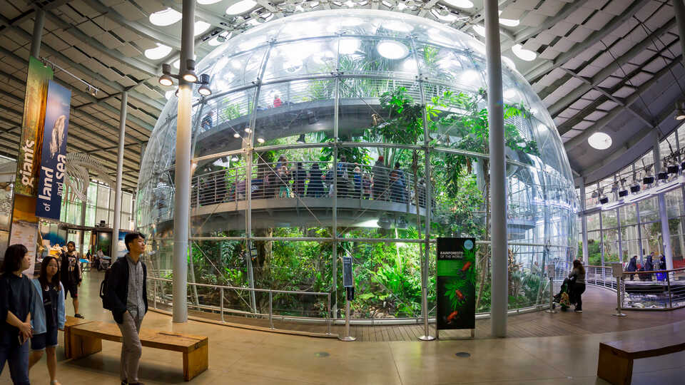

The California Academy of Sciences, located in San Francisco's Golden Gate Park, is a world-class scientific and educational institution. It is a must-visit destination for science enthusiasts, nature lovers, and curious minds of all ages.
The California Academy of Sciences is home to a remarkable range of exhibits and experiences that showcase the wonders of the natural world. Explore the Steinhart Aquarium, where you can observe a stunning variety of marine life, including colorful fish, mesmerizing jellyfish, and majestic coral reefs. Visit the Kimball Natural History Museum to learn about the rich biodiversity of California and beyond, and marvel at impressive displays of fossils, minerals, and taxidermy specimens.
One of the highlights of the academy is the Morrison Planetarium, a state-of-the-art dome that offers immersive and breathtaking shows about the universe and beyond. Sit back and gaze at the stunning visuals as you journey through space, exploring distant galaxies, witnessing cosmic phenomena, and gaining a deeper understanding of the wonders of our universe.
The academy's indoor rainforest, known as the Osher Rainforest, is another must-see attraction. Step into a lush and tropical environment and encounter a diversity of plant and animal species, including exotic birds, butterflies, and reptiles. Walk along elevated walkways, traverse rope bridges, and immerse yourself in the sights and sounds of this vibrant ecosystem.
The living roof of the California Academy of Sciences is a marvel in itself. Covered in native plants and designed to be an eco-friendly feature, it not only provides insulation and reduces energy consumption but also offers stunning views of the surrounding Golden Gate Park. Take a stroll along the rooftop and enjoy panoramic vistas while learning about sustainable architecture and environmental conservation.
The academy also hosts a range of interactive exhibits, educational programs, and special events throughout the year. Attend fascinating lectures, participate in hands-on activities, and engage with scientists to learn more about various fields of research and conservation efforts. There's always something new and exciting to discover at the California Academy of Sciences.
Don't forget to visit the academy's gift shop, where you can find a wide array of educational toys, books, and souvenirs related to science and nature. From scientific kits and telescopes to eco-friendly products and unique keepsakes, it's the perfect place to find a memento of your visit.
Whether you're a science enthusiast, a nature lover, or simply curious about the world around you, a visit to the California Academy of Sciences is an enriching and unforgettable experience that will inspire your sense of wonder and deepen your appreciation for the natural world.